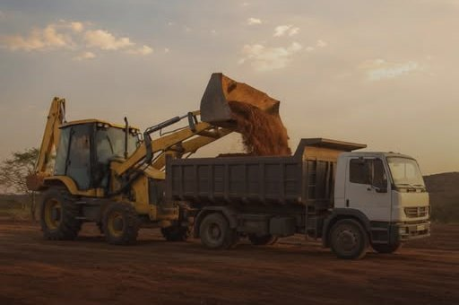
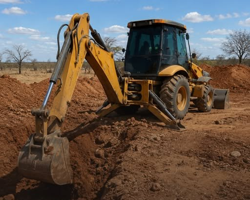
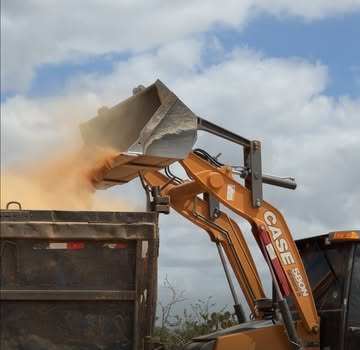
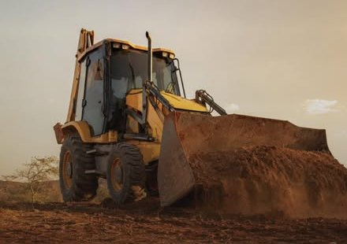
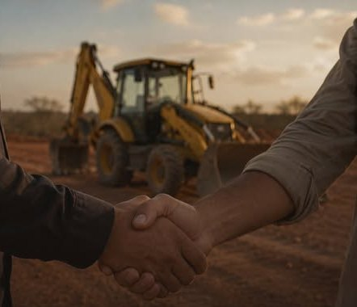
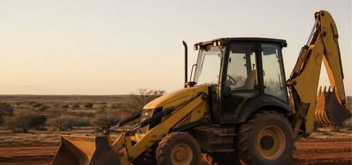

Terraplanagem e material · Tucano/BA e região
Organizamos a base da sua obra para ela avançar.
Terraplanagem, estradas, aceiros, açude e limpeza de terreno. Cascalho, areia e brita por carrada. Uma ligação resolve máquina e material.
- Resposta no mesmo dia
- Orçamento por escrito
- Medido e conferido com você

Serviços
Cada etapa do terreno exige um serviço diferente.
Não sabe qual é o seu caso? Conte o que vai fazer no orçamento que a gente diz qual serviço atende.



Materiais a granel · venda por carrada
Cascalho, areia e brita. Cada um tem seu papel na obra.
Comprar o material errado custa duas vezes.
Qual material eu preciso?
Escolha o que você vai fazer. A indicação segue o guia da DAMARCO.
Toque em uma opção acima.
Como funciona
Contratar obra não devia dar frio na barriga.
- 1
Você chama e conta o que precisa.
Pelo orçamento do site ou pelo WhatsApp. Foto do terreno ajuda muito.
- 2
A gente responde no mesmo dia.
Sem deixar você esperando para saber se dá ou não dá.
- 3
O orçamento vem por escrito.
O que vai ser feito, o material e o valor. Preço sob orçamento, nada de valor no ar.
- 4
A data só é marcada com máquina, operador e material confirmados.
Nada de marcar e não aparecer.
- 5
No fim, tudo é medido e conferido com você.
O combinado é o que foi entregue.
Antes de fechar com qualquer empresa de terraplanagem, inclusive com a DAMARCO, pergunte:
- Vocês respondem no mesmo dia?
- O orçamento vem por escrito?
- A data só é marcada com máquina, operador e material confirmados?
- No fim, vocês medem e conferem comigo?
- O entulho fica no terreno ou vai embora?

Nossos valores
Aqui, o combinado ainda vale.
- Palavra
- O que foi combinado é o que vai ser feito.
- Presença
- Resposta no mesmo dia e gente na obra na data marcada.
- Padrão
- Orçamento por escrito e data só com máquina, operador e material confirmados.
- Prova
- No fim, tudo é medido e conferido com você.
Antes e depois
Toda obra guarda um dia que ninguém fotografa: o dia do chão.

Arraste para comparar. Fotos do perfil @somosdamarco; os pares de antes e depois de cada obra entram aqui.
Área atendida
Tucano/BA e região
Cidade ou zona rural: mande a localização no orçamento que a gente confirma o atendimento e o frete no mesmo dia.
Ver se atende meu localPerguntas antes de começar uma obra
Isso ou aquilo?
Terraplanagem ou nivelamento?
Depende de como o terreno está hoje. Os dois estão no nosso serviço. No orçamento, informe o tamanho aproximado, a situação atual e mande fotos: a gente diz qual atende, no mesmo dia.
Cascalho ou brita?
Cascalho é para base e drenagem. Brita é para concreto, pavimentação e fundação.
Areia de levante ou lavada?
Areia lavada é para massa e concreto. Areia de levante é para aterro e enchimento: é mais barata, mas não substitui a lavada no concreto.
O entulho fica ou vai embora?
Isso se decide antes da obra: o destino do entulho e do aterro, se fica no terreno ou vai embora, entra no orçamento por escrito.
Quanto custa?
Todo serviço e todo material é sob orçamento, porque depende do terreno, da quantidade e do local. O material é vendido por carrada. O orçamento vem por escrito.
Não sei qual material comprar. E agora?
Manda o que você vai fazer que a gente te diz qual material atende. No orçamento dá para marcar "não sei, me ajudem".
Em quanto tempo vocês respondem?
No mesmo dia.
Quando a data da obra é marcada?
Só quando máquina, operador e material estão confirmados.
Terreno bom e terreno barato são a mesma coisa?
Não são. Antes de comprar o terreno, vale mandar fotos e a localização para saber o que ele vai pedir de serviço e de material.
Orçamento
Conte o que precisa. Resposta no mesmo dia.
Leva uns 2 minutos. Preço sempre sob orçamento, por escrito.
Etapa 1 de 6
Pedido registrado.
Agora é só mandar no WhatsApp: a mensagem já vai pronta. A resposta vem no mesmo dia.